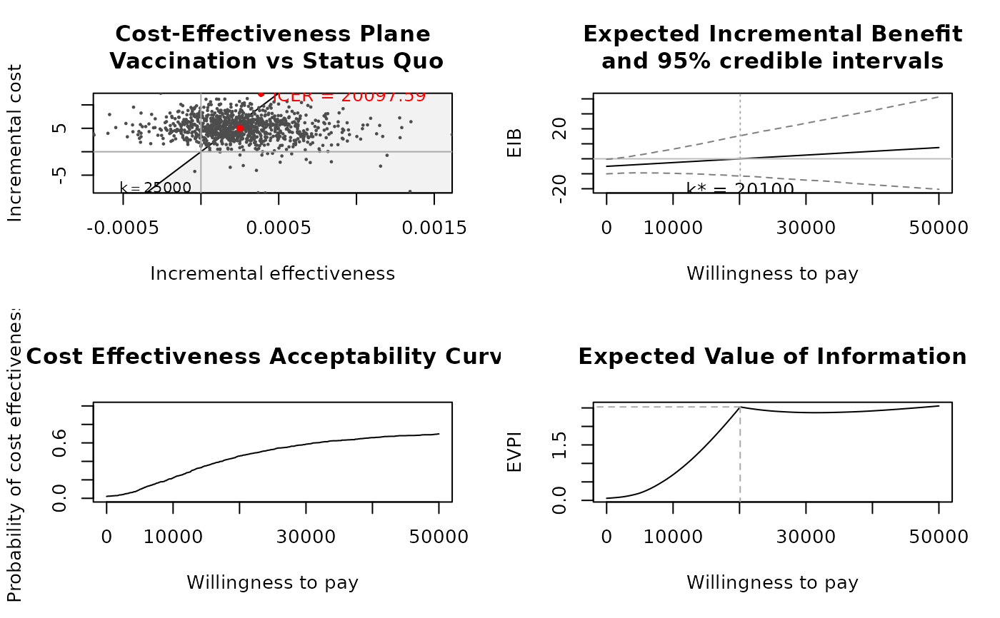
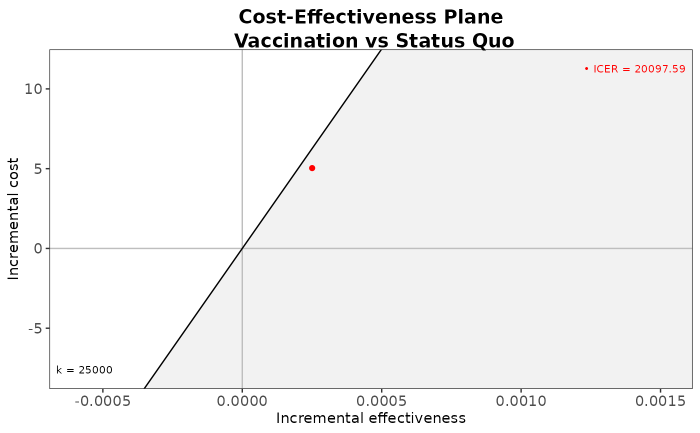
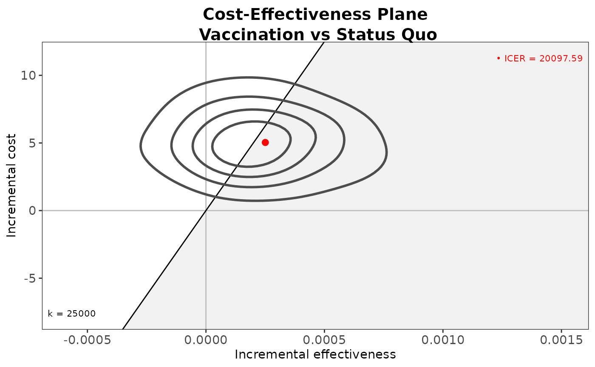
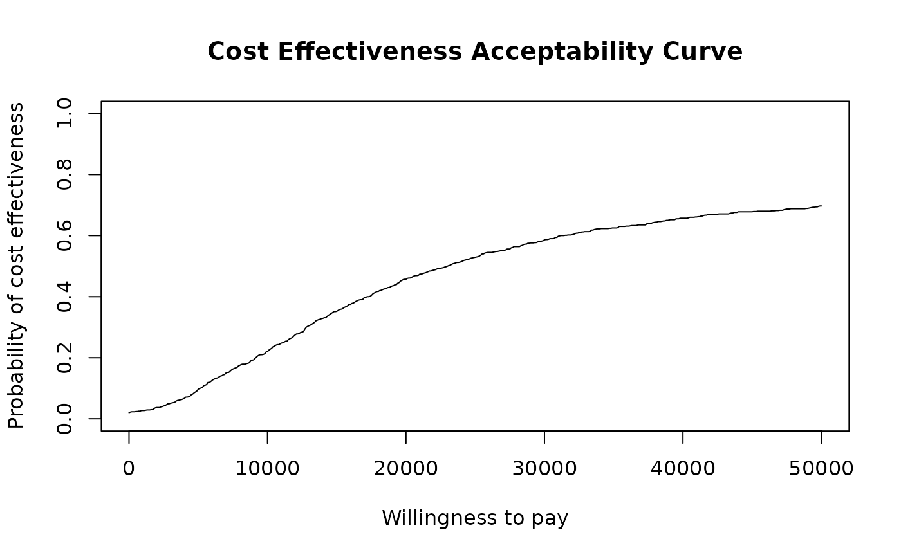
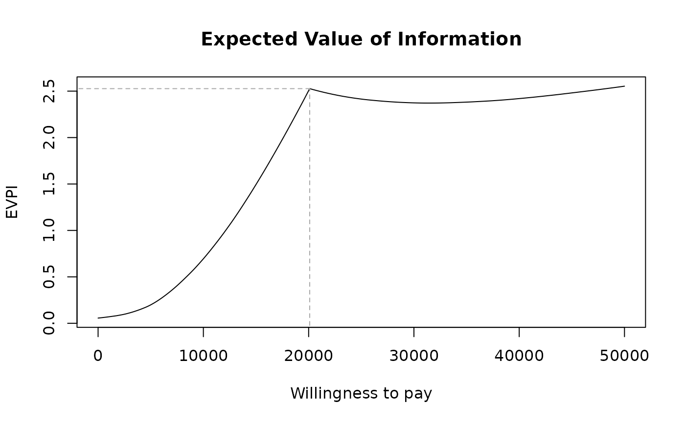
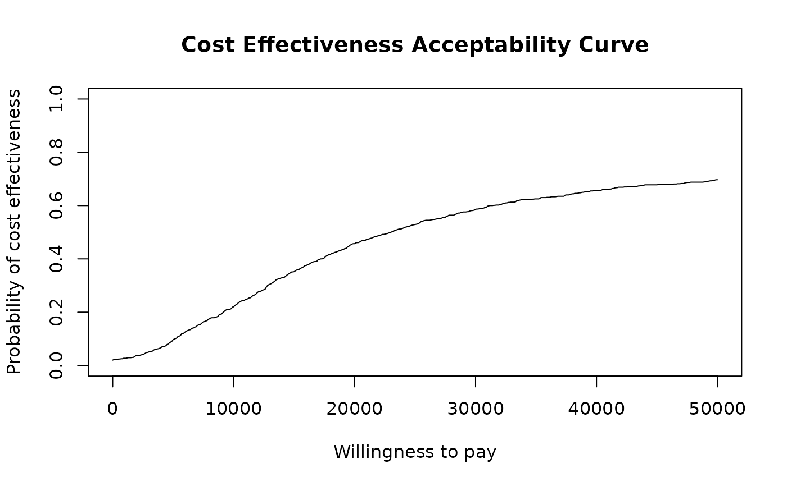
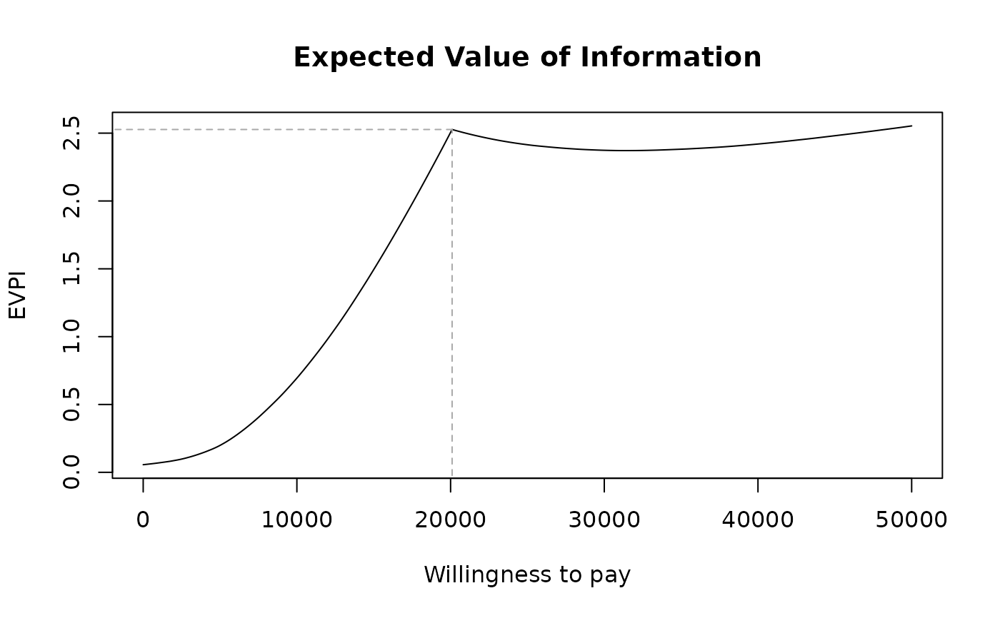

Cost-effectiveness analysis based on the results of a simulation model for a variable of clinical benefits (e) and of costs (c). Produces results to be post-processed to give the health economic analysis. The output is stored in an object of the class "bcea".
Usage
bcea(
eff,
cost,
ref = 1,
interventions = NULL,
.comparison = NULL,
Kmax = 50000,
k = NULL,
plot = FALSE,
...
)
# S3 method for default
bcea(
eff,
cost,
ref = NULL,
interventions = NULL,
.comparison = NULL,
Kmax = 50000,
k = NULL,
plot = FALSE,
...
)
# S3 method for rjags
bcea(eff, ...)
# S3 method for rstan
bcea(eff, ...)
# S3 method for bugs
bcea(eff, ...)Arguments
- eff
An object containing
nsimsimulations for the variable of clinical effectiveness for each intervention being considered. In general it is a matrix withnsimrows andnintcolumns. This are partially matched withe' from previous version ofBCEA` for back-compatibility.- cost
An object containing
nsimsimulations for the variable of cost for each intervention being considered. In general it is a matrix withnsimrows andnintcolumns. This are partially matched withc' from previous version ofBCEA` for back-compatibility.- ref
Defines which intervention (columns of
efforcost) is considered to be the reference strategy. The default valueref = 1means that the intervention associated with the first column ofefforcostis the reference and the one(s) associated with the other column(s) is(are) the comparators.- interventions
Defines the labels to be associated with each intervention. By default and if
NULL, assigns labels in the form "Intervention1", ... , "InterventionT".- .comparison
Selects the comparator, in case of more than two interventions being analysed. Default as NULL plots all the comparisons together. Any subset of the possible comparisons can be selected (e.g.,
comparison=c(1,3)orcomparison = 2).- Kmax
Maximum value of the willingness to pay to be considered. Default value is
k = 50000. The willingness to pay is then approximated on a discrete grid in the interval[0, Kmax]. The grid is equal tokif the parameter is given, or composed of501elements ifk = NULL(the default).- k
A(n optional) vector for the values of the willingness to pay grid. Should be of length > 1 otherwise plots will be empty. If not specified then BCEA will construct a grid of 501 values from 0 to
Kmax. This option is useful when performing intensive computations (e.g. for the EVPPI). This was changed fromwtpin previous versions for consistency with other functions and so will be deprecated in the future.- plot
A logical value indicating whether the function should produce the summary plot or not.
- ...
Additional arguments
Value
An object of the class "bcea" containing the following elements
- n_sim
Number of simulations produced by the Bayesian model
- n_comparators
Number of interventions being analysed
- n_comparisons
Number of possible pairwise comparisons
- delta.e
For each possible comparison, the differential in the effectiveness measure
- delta.c
For each possible comparison, the differential in the cost measure
- ICER
The value of the Incremental Cost-Effectiveness Ratio
- Kmax
The maximum value assumed for the willingness to pay threshold
- k
The vector of values for the grid approximation of the willingness to pay
- ceac
The value for the Cost-Effectiveness Acceptability Curve, as a function of the willingness to pay
- ib
The distribution of the Incremental Benefit, for a given willingness to pay
- eib
The value for the Expected Incremental Benefit, as a function of the willingness to pay
- kstar
The grid approximation of the break-even point(s)
- best
A vector containing the numeric label of the intervention that is the most cost-effective for each value of the willingness to pay in the selected grid approximation
- U
An array including the value of the expected utility for each simulation from the Bayesian model, for each value of the grid approximation of the willingness to pay and for each intervention being considered
- vi
An array including the value of information for each simulation from the Bayesian model and for each value of the grid approximation of the willingness to pay
- Ustar
An array including the maximum "known-distribution" utility for each simulation from the Bayesian model and for each value of the grid approximation of the willingness to pay
- ol
An array including the opportunity loss for each simulation from the Bayesian model and for each value of the grid approximation of the willingness to pay
- evi
The vector of values for the Expected Value of Information, as a function of the willingness to pay
- interventions
A vector of labels for all the interventions considered
- ref
The numeric index associated with the intervention used as reference in the analysis
- comp
The numeric index(es) associated with the intervention(s) used as comparator(s) in the analysis
- step
The step size used to form the grid approximation to the willingness to pay
- e
The
effmatrix used to generate the object (see Arguments)- c
The
costmatrix used to generate the object (see Arguments)
References
Baio G (2013). Bayesian Methods in Health Economics. CRC.
Baio G, Dawid aP (2011). “Probabilistic sensitivity analysis in health economics.” Stat. Methods Med. Res., 1--20. ISSN 1477-0334, doi:10.1177/0962280211419832 , https://pubmed.ncbi.nlm.nih.gov/21930515/.
Examples
# See Baio (2013), Baio (2011) for a detailed description of the
# Bayesian model and economic problem
# Load the processed results of the MCMC simulation model
data(Vaccine)
# Runs the health economic evaluation using BCEA
m <- bcea(
e=eff,
c=cost, # defines the variables of
# effectiveness and cost
ref=2, # selects the 2nd row of (e, c)
# as containing the reference intervention
interventions=treats, # defines the labels to be associated
# with each intervention
Kmax=50000, # maximum value possible for the willingness
# to pay threshold; implies that k is chosen
# in a grid from the interval (0, Kmax)
plot=TRUE # plots the results
)

# Creates a summary table
summary(
m, # uses the results of the economic evaluation
# (a "bcea" object)
wtp=25000 # selects the particular value for k
)
#>
#> Cost-effectiveness analysis summary
#>
#> Reference intervention: Vaccination
#> Comparator intervention: Status Quo
#>
#> Optimal decision: choose Status Quo for k < 20100 and Vaccination for k >= 20100
#>
#>
#> Analysis for willingness to pay parameter k = 25000
#>
#> Expected net benefit
#> Status Quo -36.054
#> Vaccination -34.826
#>
#> EIB CEAC ICER
#> Vaccination vs Status Quo 1.2284 0.529 20098
#>
#> Optimal intervention (max expected net benefit) for k = 25000: Vaccination
#>
#> EVPI 2.4145
# \donttest{
# Plots the cost-effectiveness plane using base graphics
ceplane.plot(
m, # plots the Cost-Effectiveness plane
comparison=1, # if more than 2 interventions, selects the
# pairwise comparison
wtp=25000, # selects the relevant willingness to pay
# (default: 25,000)
graph="base" # selects base graphics (default)
)
# Plots the cost-effectiveness plane using ggplot2
if (requireNamespace("ggplot2")) {
ceplane.plot(
m, # plots the Cost-Effectiveness plane
comparison=1, # if more than 2 interventions, selects the
# pairwise comparison
wtp=25000, # selects the relevant willingness to pay
# (default: 25,000)
graph="ggplot2"# selects ggplot2 as the graphical engine
)
# Some more options
ceplane.plot(
m,
graph="ggplot2",
pos="top",
size=5,
ICER_size=1.5,
label.pos=FALSE,
opt.theme=ggplot2::theme(text=ggplot2::element_text(size=8))
)
}

# Plots the contour and scatterplot of the bivariate
# distribution of (Delta_e,Delta_c)
contour(
m, # uses the results of the economic evaluation
# (a "bcea" object)
comparison=1, # if more than 2 interventions, selects the
# pairwise comparison
nlevels=4, # selects the number of levels to be
# plotted (default=4)
levels=NULL, # specifies the actual levels to be plotted
# (default=NULL, so that R will decide)
scale=0.5, # scales the bandwidths for both x- and
# y-axis (default=0.5)
graph="base" # uses base graphics to produce the plot
)
# Plots the contour and scatterplot of the bivariate
# distribution of (Delta_e,Delta_c)
contour2(
m, # uses the results of the economic evaluation
# (a "bcea" object)
wtp=25000, # selects the willingness-to-pay threshold
)
# Using ggplot2
if (requireNamespace("ggplot2")) {
contour2(
m, # uses the results of the economic evaluation
# (a "bcea" object)
graph="ggplot2",# selects the graphical engine
wtp=25000, # selects the willingness-to-pay threshold
label.pos=FALSE # alternative position for the wtp label
)
}

# Plots the Expected Incremental Benefit for the "bcea" object m
eib.plot(m)
 # Plots the distribution of the Incremental Benefit
ib.plot(
m, # uses the results of the economic evaluation
# (a "bcea" object)
comparison=1, # if more than 2 interventions, selects the
# pairwise comparison
wtp=25000, # selects the relevant willingness
# to pay (default: 25,000)
graph="base" # uses base graphics
)
# Produces a plot of the CEAC against a grid of values for the
# willingness to pay threshold
ceac.plot(m)

# Plots the Expected Value of Information for the "bcea" object m
evi.plot(m)

# }
# Plots the distribution of the Incremental Benefit
ib.plot(
m, # uses the results of the economic evaluation
# (a "bcea" object)
comparison=1, # if more than 2 interventions, selects the
# pairwise comparison
wtp=25000, # selects the relevant willingness
# to pay (default: 25,000)
graph="base" # uses base graphics
)
# Produces a plot of the CEAC against a grid of values for the
# willingness to pay threshold
ceac.plot(m)

# Plots the Expected Value of Information for the "bcea" object m
evi.plot(m)

# }